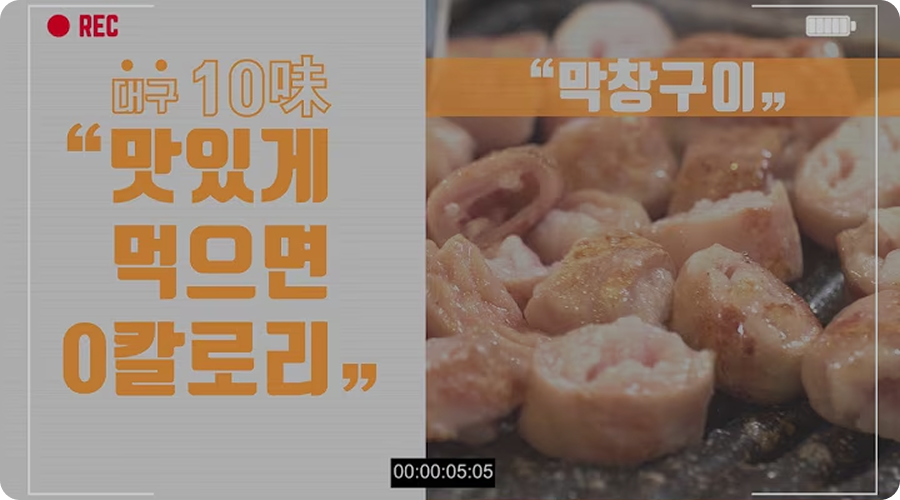

막창구이

찌개로만 끓여먹던 막창을 1970년대 초 연탄에 구워 특제 된장 소스에 찍어 먹는 요리법을 개발하면서 막창구이가 대구 전역으로 퍼지게 되었다. 현재는 막창을 숙성시키거나 삶는 기술이 발전해
막창 특유의 냄새가 나는 식당이 거의 없어 호불호를 찾기 어려운 별미로 자리 잡았다. 특화된 레시피와 신선도 유지를 위한 포장법, 차별화된 특제 된장소스 등의 개발로 꾸준한 사랑을 받고
있다.